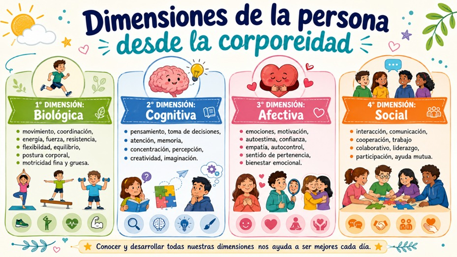
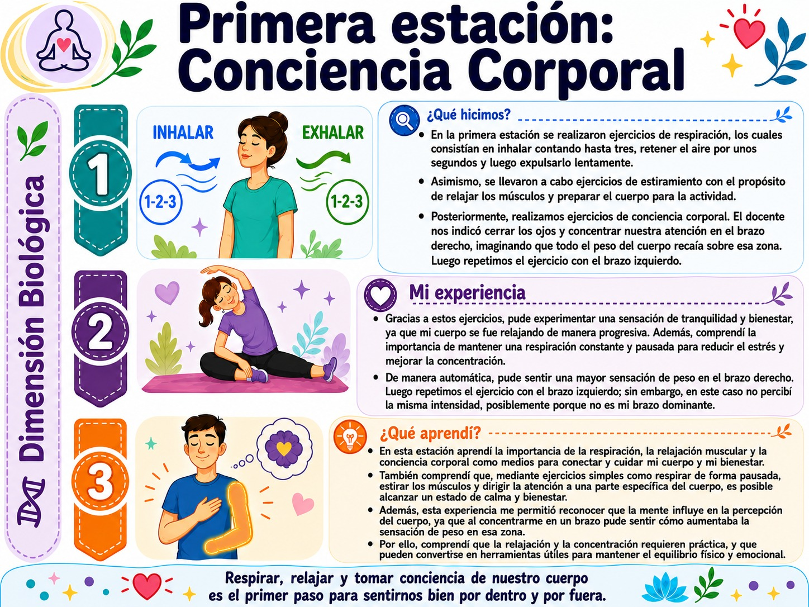
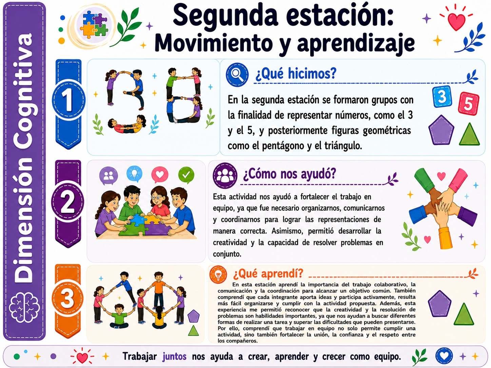
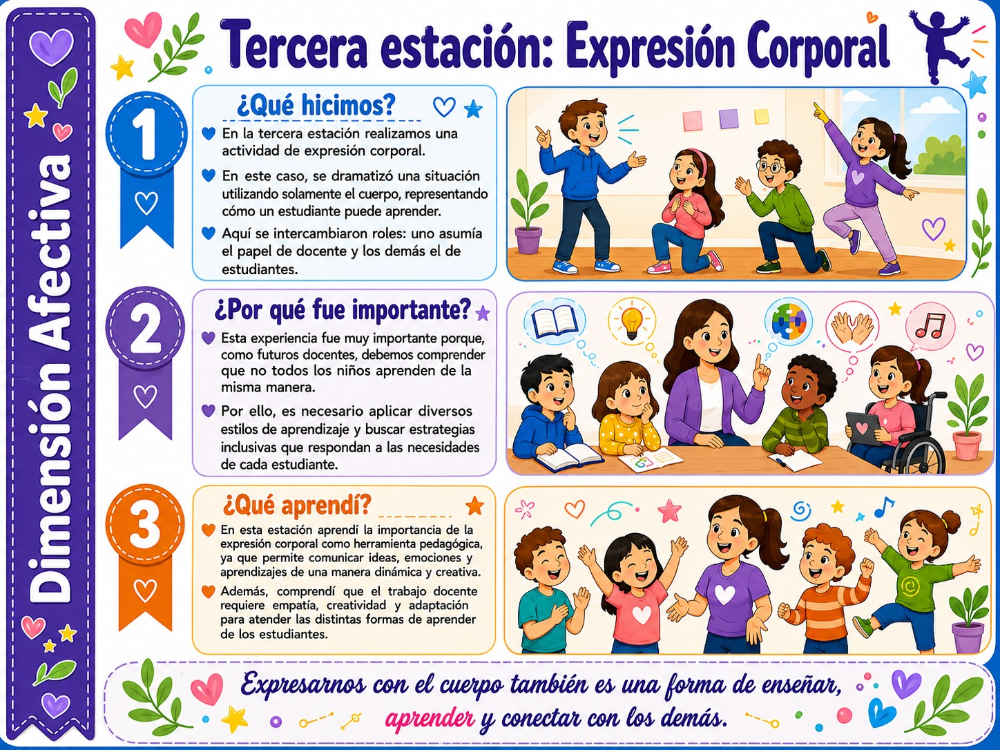
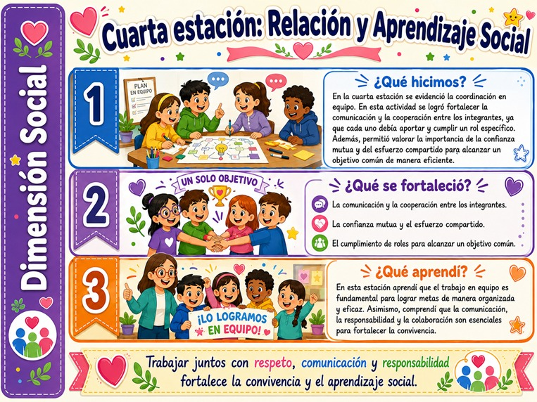
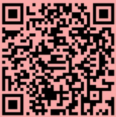
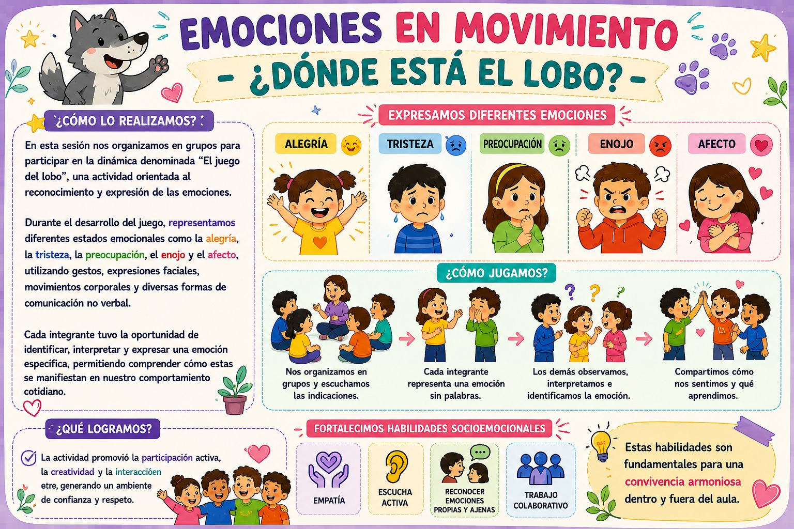

La corporeidad es una dimensión integral del ser humano mediante la cual la persona vive, reconoce y expresa su cuerpo en relación consigo misma, con los demás y con el entorno. No se refiere solo al cuerpo físico, sino también a los procesos de pensamiento, emoción, movimiento e identidad. Según Piaget (1975), el cuerpo es el primer medio de exploración y aprendizaje del niño; y desde el pensamiento de Xavier Zubiri, la corporeidad abarca la vivencia integral del hacer, sentir, pensar y querer. En síntesis, es fundamental para construir la identidad, la autonomía y la interacción social.
Durante esta sesión se trabajaron diversas estaciones en equipo, cada una relacionada con una dimensión de la persona.
Fotografías de las Estaciones:

BIOLÓGICA:
movimiento, coordinación, energía, fuerza, resistencia, flexibilidad, equilibrio, postura corporal, motricidad fina y gruesa.

COGNITIVA:
pensamiento, toma de decisiones, atención, memoria, concentración, percepción, creatividad, imaginación.

AFECTIVA:
emociones, motivación, autoestima, confianza, empatía, autocontrol, sentido de pertenencia, bienestar emociona.

SOCIAL:
interacción, comunicación, cooperación, trabajo colaborativo, liderazgo, participación, ayuda mutua

Definición de Motricidad:
La motricidad es la capacidad del ser humano para realizar movimientos coordinados y controlados, integrando el sistema nervioso, muscular y óseo. En los niños, es esencial para explorar el entorno y construir aprendizajes. Piaget (1967) la define como el cimiento de la inteligencia sensoriomotriz, y Vygotsky (1978) destaca su conexión con el desarrollo cognitivo y las funciones mentales superiores.
Evidencia 2 — Estación "Memoria y Movimiento":
Trabajamos en grupos en la estación "Memoria y Movimiento": cada integrante proponía un ejercicio y debía recordar y ejecutar los movimientos previos antes de agregar uno nuevo. Esta dinámica fortaleció la memoria secuencial, la coordinación y el trabajo en equipo.

Esta experiencia me permitió comprender que el aprendizaje integra aspectos cognitivos, motrices, sociales y emocionales. A través de la actividad “Memoria y Movimiento”, reconocí la importancia del juego y el movimiento como estrategias pedagógicas que fortalecen la atención, la memoria, la coordinación y el trabajo colaborativo. Asimismo, reflexioné sobre la necesidad de promover experiencias de aprendizaje activas, significativas e inclusivas, donde los estudiantes sean protagonistas de su propio aprendizaje. Como futura docente, reafirmo mi compromiso de generar espacios educativos dinámicos que favorezcan el desarrollo integral, la autonomía, la convivencia y el aprendizaje de los niños.
Evidencia 3 — EMOCIONES EN MOVIMIENTO - ¿DÓNDE ESTÁ EL LOBO?:
En grupos, participamos en "El juego del lobo", donde representamos emociones como alegría, tristeza, enojo y afecto mediante gestos, expresiones faciales y movimiento corporal. La actividad generó un ambiente de confianza, creatividad y respeto.

Esta actividad me permitió comprender que las emociones forman parte esencial del desarrollo integral de los niños y que es importante brindar espacios donde puedan expresarlas libremente. Como futura docente, considero que fomentar la educación emocional mediante actividades lúdicas favorece la autoestima, la empatía y las relaciones positivas entre los estudiantes.
Mediante la estrategia "Panel Integrado", cada grupo abordó un tema de expresión y conciencia corporal. Mi grupo expuso sobre Expresión Corporal: su definición, formas de comunicación no verbal y beneficios educativos. Reconocimos que el cuerpo transmite mensajes que complementan o reemplazan las palabras, y que la expresión corporal fortalece la creatividad, la autoestima y las habilidades sociales desde los primeros años de escolaridad.
En esta sesión se abordaron diversos temas relacionados con la exploración y la conciencia corporal, los cuales fueron distribuidos entre los diferentes grupos de trabajo. Para el desarrollo de la actividad se utilizó la estrategia denominada “Panel Integrado”, que permitió la participación activa de todos los estudiantes mediante el intercambio de información y conocimientos. Mi grupo tuvo a cargo el tema “Expresión corporal”, para lo cual elaboramos una presentación en diapositivas donde se incluyeron aspectos fundamentales como su definición, las principales formas de comunicación no verbal y los beneficios educativos que aporta en el proceso de enseñanza y aprendizaje. Durante la exposición analizamos cómo los gestos, las posturas, las miradas, los movimientos y las expresiones faciales constituyen medios importantes para comunicar ideas, emociones, sentimientos e intenciones.
A través de esta actividad comprendimos que el ser humano no solo se comunica mediante el lenguaje verbal, sino también a través de su cuerpo, el cual transmite constantemente mensajes que complementan o incluso reemplazan las palabras. Asimismo, reconocimos que la expresión corporal favorece el desarrollo de la creatividad, la autoestima, la confianza y las habilidades sociales, permitiendo que las personas interactúen de manera más efectiva con su entorno.
En esta sesión participamos en una actividad lúdica orientada a comprender la importancia del rol docente en el desarrollo corporal. El juego consistió en insertar un cono dentro de un ula ula siguiendo las indicaciones de un compañero que asumía el papel de docente. Al participante se le vendaban los ojos y debía dar tres vueltas sobre sí mismo, lo que limitaba su percepción visual y generaba mayor necesidad de orientación y confianza en las instrucciones recibidas.
Esta dinámica permitió desarrollar capacidades sensoriomotrices —integración de los sentidos y el movimiento— y capacidades perceptivomotrices, vinculadas con la orientación espacial, el equilibrio, la coordinación y el control corporal. La experiencia puso de manifiesto la importancia de la comunicación efectiva, la confianza y el acompañamiento docente durante el proceso de aprendizaje.
A través de esta actividad comprendimos que el docente no solo transmite conocimientos, sino que también guía, orienta y crea experiencias significativas que favorecen el desarrollo integral de los estudiantes mediante el movimiento y la exploración del entorno.